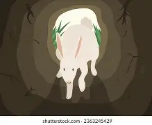

Hello Elliot
Good job Elliot you got it, what did you think of the website hopefully it made you laugh a little. Sorry if it had some of the worst spelling and grammer you have
ever seen
I don't pride my self on those things but it does seem like everything I do pride myself on just lands in my hubris. God I talk like a piece of shit sometimes.
I've been trying to get better at it though and failing. Sometimes it feels like everyone around me grew up and I stayed that know it all kid. I mean don't get me
wrong the entire website is satire and hyperbole but I feel like if I wasent so anitsocial I would talk like that for some ungodly reason. Almost like a fear of
expressing myself. You know when we would talk I think I spent more time trying to hide my interests then try to understand what yours are, sorry for that. I was
starting to forget why I did this I really liked your CD you made I thought it was really cool and I know you really like the matrix and you liked the coding parts
of tron so I made a little arg for you even though you probably put way more time and effort into your gift. well see you around Elliot I might take this down I might
not I dont know. What I do know is I don't like talking about my feelings and I know Mr.Geiger can see this (if you're reading this hello Mr.Geiger) so I might. Hell
I might not even post this but if I do leave it up hopefully this is a reminder to inspect things if they don't look left
instead press on right
